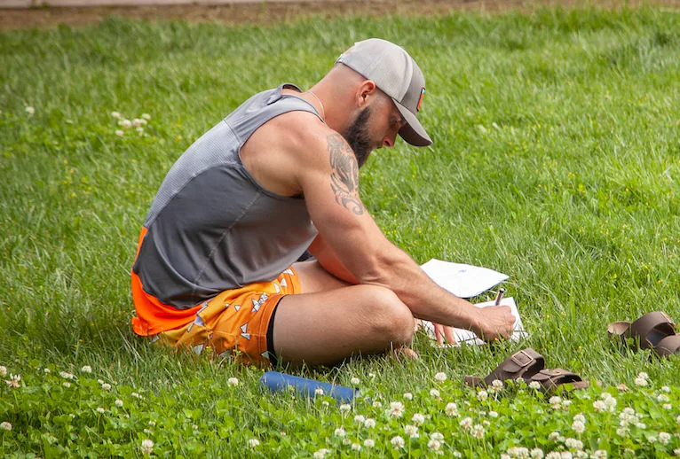

Hi {first_name},
Have you ever experienced that sweet gratification of knocking out tasks or achieving a certain goal?
It's a damn good feeling, isn't it?
For many of us, checking off those to-dos is a source of motivation and a sense of accomplishment.
I frequently say that as men, when we lay our heads down on a pillow at night, if we accomplish our duties, roles, and commitments according to OUR unique scoreboard, it is a good indicator that it was a solid day.
However, it is critical to recognize that executing tasks needs to be accompanied by one key thing - discernment.
I know this to be true because this is something I personally have struggled with for years.
I used to hide in tasking and busyness.
And it wasn't until I worked with a coach that he pointed out this repetitive pattern I had been living out for years.

At this new stage in life with a family, working tirelessly and non-stop hours, I've realized has greater consequences.
A big lesson came from this...
Discernment of which tasks are essential to engage with on a daily basis is critical.
Questions you can ask yourself:
- Are these tasks I engage with truly moving me forward in life in a meaningful and noticeable way?
- Are they contributing to increased revenue in my businesses?
- Are they giving me more quality time with my family?
- Are they enhancing my overall health, vitality, and physical performance?
- Why are they important to me in the first place?
I understand the allure of staying busy, but it's a continual process for both men and individuals I support to not merely complete tasks but to choose them wisely.
Failure to exercise discernment may result in finding yourself in the same position 1 year from now, 3 years from now, or even 5 years from now.
It often takes a step back from the daily grind to recognize that we've become so immersed in it that we've neglected to seek a higher perspective and fresh air.
The true value lies in using your time judiciously, ensuring that every minute spent brings you closer to the things that yield what really matters, such as freedom, connection, and vitality.
This is where the GOLD is.
In my upcoming Path to Inspired Action Program, we will do just this.
Over the course of 6-10 weeks, we will unearth the hidden aspects of yourself that may be holding you back. With newfound awareness and the support of a community of like-minded men, you can take the needed aligned and inspired action in your life.
This program combines group online experiences, along with one-on-one sessions to guide you on a journey of action and empowerment.
Join us starting Monday, October 2nd.
To learn more about the program, apply, and secure your spot, please click here.
Best regards,
Mike
P.S. Stay tuned for a special gift coming this Monday - a specific breathwork protocol that has been a game-changer for me. Whether it's the start of your day, during travel, or whenever you find yourself in a rut, this practice can help you manage overwhelm, anxiety, and overall stress. I can't wait to share it with you!
|